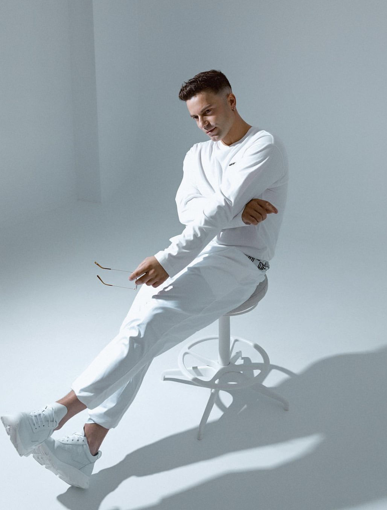
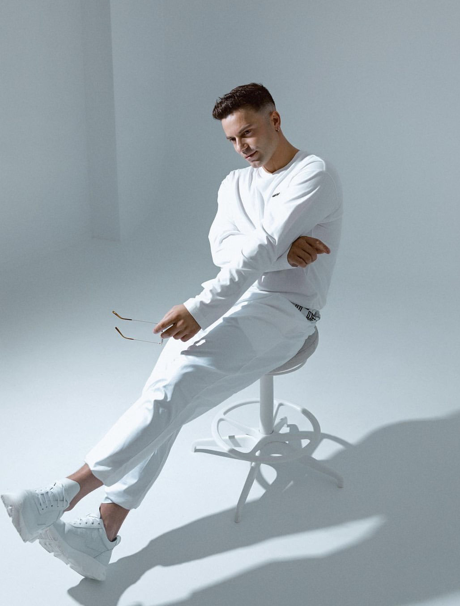

The Story of Claydee


Claydee Lupa, known mononymously as Claydee, is an internationally acclaimed music producer, songwriter, and performer. Born in Albania and raised in Greece, Claydee has made an indelible mark in the global music scene with his unique blend of dance, pop, and house music, characterized by infectious rhythms and vibrant melodies.

With an educational background in audio engineering and music production, Claydee's rise to fame began with his breakout single "Mamacita Buena," which garnered millions of streams worldwide. His ability to fuse Mediterranean influences with contemporary global sounds quickly made him a favorite in dance clubs across Europe and beyond.
Over the years, Claydee has collaborated with several renowned artists and has performed at major music festivals. Some of his most notable tracks include "Sexy Papi," "Te Quiero," and the viral hit "Alena." His work has earned him multiple awards, including accolades for best video, song of the year, and producer of the year in various European countries.
 

Apart from his solo work, Claydee is also a member of the dynamic duo Bang La Decks, whose tracks have topped the charts across numerous countries. His versatility as a producer allows him to work across multiple genres, bringing fresh, innovative sounds to every project. Today, Claydee continues to be a dominant force in the music industry, blending cultures and sounds to create music that resonates with people from all walks of life.